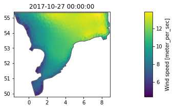
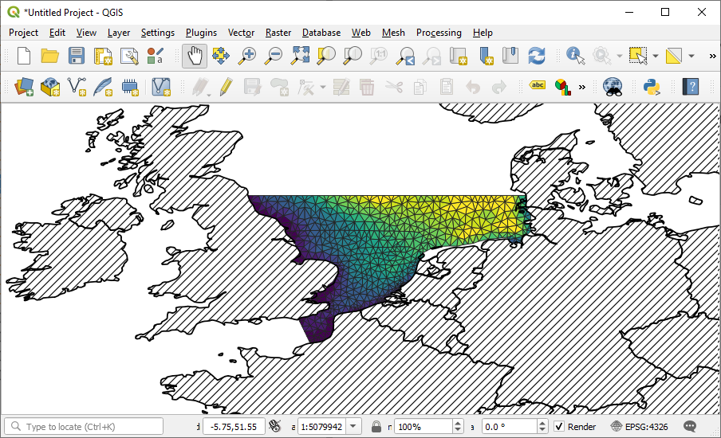
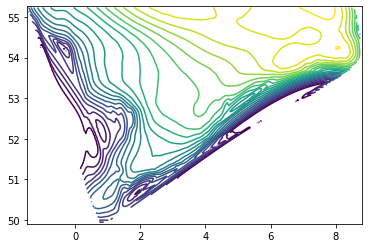
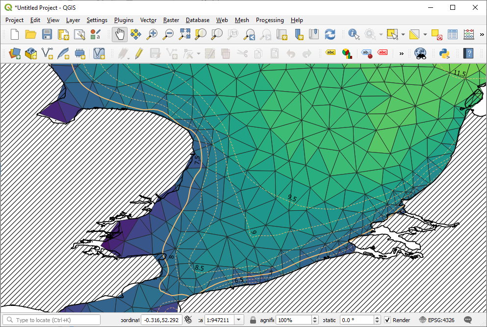

# conda install geopandasDfsu - Export to shapefile
- Read selected item and timestep from dfsu
- Extract geometry
- Create GeoPandas dataframe
- Save to ESRI shapefile
import numpy as np
import pandas as pd
import geopandas as gpd
import matplotlib.pyplot as plt
import mikeioStep 1. read the selected data
ds = mikeio.read("../tests/testdata/wind_north_sea.dfsu")
ws = ds["Wind speed"][0]
ws.plot();
Step 2. extract geometry
shp = ds.geometry.to_shapely()
type(shp)shapely.geometry.multipolygon.MultiPolygonGeopandas does not like multipolygon, it should be a list of polygons
poly_list = [p for p in shp.geoms]Step 3. Create a geopandas dataframe
df = pd.DataFrame({'wind_speed':ws.to_numpy()})
df.head()| wind_speed | |
|---|---|
| 0 | 9.530760 |
| 1 | 9.652719 |
| 2 | 9.806072 |
| 3 | 8.775489 |
| 4 | 11.013206 |
gdf = gpd.GeoDataFrame(df,geometry=poly_list)Step 4. Save to shapefile
gdf.to_file("wind_speed.shp")Step 5…
Do further work in QGIS

Would you prefer to have this workflow to be a method on the mikeio.Dfsu class?
Post an issue on GitHub !
Contour lines
# get coordinates
ec = ds.geometry.element_coordinates
lon = ec[:,0]
lat = ec[:,1]# Select item and timestep
m = ds.Wind_speed[0].to_numpy()# Interpolate to cartesian grid
from scipy.interpolate import griddata
numcols, numrows = 200, 200
xi = np.linspace(lon.min(), lon.max(), numcols)
yi = np.linspace(lat.min(), lat.max(), numrows)
xi, yi = np.meshgrid(xi, yi)
grid_z = griddata(points=ec[:,0:2],values=m,xi=(xi,yi),method='cubic')contour_levels=np.arange(4, 14, 0.5)
cn = plt.contour(xi,yi,grid_z,levels=contour_levels)
from shapely.geometry import LineString
poly_list = []
for i in range(len(cn.collections)):
p = cn.collections[i].get_paths()[0]
v = p.vertices
x = v[:,0]
y = v[:,1]
poly = LineString([(i[0], i[1]) for i in zip(x,y)])
if(poly.is_empty):
print(f"{i} is empty")
poly_list.append(poly)# Clip to domain
domain = ds.geometry.to_shapely().buffer(0)
poly_list = [p.intersection(domain) for p in poly_list]# Create GeoDataframe
df = pd.DataFrame({'wind_speed':contour_levels})
gdf = gpd.GeoDataFrame(df,geometry=poly_list)
gdf.head()| wind_speed | geometry | |
|---|---|---|
| 0 | 4.0 | LINESTRING EMPTY |
| 1 | 4.5 | LINESTRING EMPTY |
| 2 | 5.0 | LINESTRING (0.74084 49.95996, 0.79247 49.94723... |
| 3 | 5.5 | LINESTRING (0.74084 50.00444, 0.79247 49.99547... |
| 4 | 6.0 | LINESTRING (0.68920 50.08850, 0.73941 50.06993... |
# export shapefile
gdf.to_file("wind_speed_contours.shp")
Clean up
import os
files = ["wind_speed","wind_speed_contours"]
exts = ["cpg","dbf","shp","shx"]
for file in files:
for ext in exts:
filename = f"{file}.{ext}"
if os.path.exists(filename): os.remove(filename)